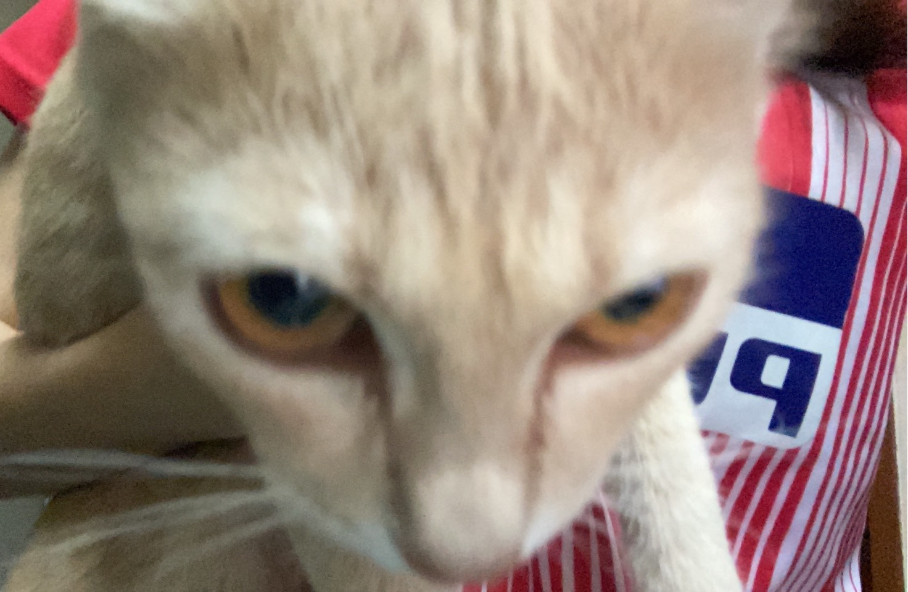

Meeya the Cat

Introduction
Meeya was adoptd from an animal shelter and now resides in Seattle, WA, where she runs a small but successful web page design business exclusive ly for cat clients.
Profile
- favorite food- smoked salmon
- hobbies-watching fishing on ESPN, snaking on garden flowers, monitoring the aptment parking lot
- hiidden talent-Karaoke
Links
Vital Statistics
| Age |
Weight |
Eye Color |
1 month |
1.5 pounds |
yellow |
| 1 year |
7 pounds |
yellow |
| 2 years |
8 pounds |
yellow |
Last updated on 24 June 2013 by Meeya the cat
Back to Home
|